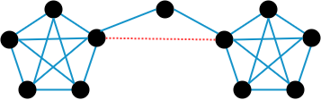

AR - Lesson 08
Indice
1 Metodi euristici per partizionare in comunità
Nella precedente parte sono stati introdotti i concetti cut- e web-community, e dimostrato che il problema del partizionamento di un grafo
in web-communities è un problema difficile1 dal punto di vista computazionale.
In questa parte verranno mostrate due famiglie approcci che dal punto di vista euristico riescono a partizionare un grafo in comunità accettabili,
ovvero in gruppi di nodi abbastanza coesi tra di loro.
Più precisamente i due metodi si dividono in:
- metodi partitivi, in cui si parte considerando l'intero grafo come unica grande comunità, e la si inizia a disconnettere (rimuovendo archi) finché non si otterranno due comunità distinte e coese. Se si desidera ottenere una granularità maggiore basta iterare il metodo sui sottografi ottenuti.
- metodi agglomerativi, in cui si parte considerando ogni singolo nodo una comunità, e man mano si aggiungono gli archi del grafo finché non si otterranno un numero di comunità desiderato con un livello di coesione accettabile.
Osservare che entrambi i metodi consentono di ottenere delle partizioni nidificate (nested), infatti nel metodo partitivo si genera una partizione a partire da una più grande (approccio top-down), e nel metodo agglomerativo si genera una partizione come composizione di altre più piccole (approccio bottom-up).
Figura 1: Schema di partizione metodo partitivo.
Figura 2: Schema di partizione metodo agglomerativo.
Entrambi i metodi hanno quindi uno schema di partizione ad albero.
Osservare infine che entrambi i metodi richiedono la scelta di un arco da rimuovere o aggiungere ad ogni passo.
1.1 Edge-Betweenness
Il concetto di betweennes di un arco è sfruttato come criterio di rimozione degli archi nei metodi partitivi di partizionamento precedentemente accennati.
Tale concetto a sua volta si basa sulle proprietà di un arco di essere bridge o local bridge.
Sappiamo che per definizione, rimuovere un arco bridge disconnette due porzioni di una rete, mentre rimuovere un local bridge certamente peggiora la connettività tra due comunità.
Sappiamo anche che gli archi bridge e local brdige sono dei weak ties.
Perciò, rimuovendo tutti i weak ties da una rete rimangono solamente gruppi di nodi connessi da relazioni forti (strong ties), e tali gruppi rispecchiano il concetto intuitivo
di comunità (ovvero gruppi di persone collegati da legami forti).
Purtroppo però esistono casi in cui anche rimuovendo tutti i weak ties non avviene un partizionamento in comunità.

Figura 3: Controesempio: in blu i weak ties e in rosso gli strong ties.
Infatti, considerando il precedente controesempio, pur rimuovendo l'arco rosso non avremo un partizionamento.
Invece è evidente che c'è una comunità composta da una clique a destra e una composta da una clique a sinistra.
Per quanto riguarda il nodo centrale esso può essere inserito indistintamente i una delle due comunità.
Perciò come criterio potremmo considerare la quantità di traffico (o flusso) di informazioni che passa attraverso gli archi.
Possiamo considerare come "nuovi archi ponte" tutti quegli archi attraverso i quali passa una grande quantità di flusso, e che se rimossi rendono più difficile la comunicazione tra due comunità.
Secondo questo criterio possiamo rimuovere gli archi sui quali passa maggior flusso, finché non otterremo un partizionamento accettabile della rete.
Più formalmente, considerando un grafo non diretto \(G = (V,E)\), definiamo con \(\sigma_{st}(u,v)\) il numero di shortest-paths \(\pi^\star(s,t)\) (o camminimi minimi) tra \(s\) e \(t\) che passano per l'arco \((u,v)\).
Definiamo poi con \(b_{st}(u,v)\) la betweennes dell'arco \((u,v)\) rispetto alla coppia \(s,t\) come la frazione di shortest path \(\pi^\star(s,t)\) che passano per l'arco \((u,v)\)
\begin{align*} \sigma_{st} &= \vert \lbrace \pi^\star(s,t) \rbrace \vert\\ b_{st}(u,v) &= \frac{\sigma_{st}(u,v)}{\sigma_{st}} \end{align*}Definiamo infine la betweenness \(b(u,v)\) di un arco \((u,v)\) come la semi-somma di tutte le betweenness relative \(b_{st}(u,v)\), per ogni coppia di nodi \(s,t\) \[ b(u,v) = \frac{1}{2} \sum_{(s,t) \in \binom{V}{2}} b_{st}(u,v) \]
Notare che il fattore \(1/2\) è necessario per evitare di contare le ripetizioni, del tipo \(b_{st}(u,v)\) e \(b_{ts}(u,v)\).
Analogamente alla edge-betweenness si può definire una node-betweenness, seguendo la stessa definizione.
1.2 Il metodo di Girvan-Newman
Il metodo di Girvan-Newman è un metodo partitivo per il partizionamento, basato sul concetto di edge-betweenness, abbastanza semplice. I passaggi sono i seguenti:
- Si calcola l'arco \((u,v)\) con betweenness \(b(u,v)\) massima, e lo si rimuove.
- Se il grafo residuo risulta partizionato con in una granularità desiderata allora abbiamo concluso.
- Se così non fosse si ricalcola il nuovo arco con betweenness massima del nuovo grafo e si itera finché non si ottiene il risultato desiderato.
L'algoritmo di suo è abbastanza semplice, l'unico problema è il calcolo delle betweenness degli archi. Purtroppo non si può applicare un approccio brute force calcolando tutti gli shortest path altrimenti la complessità risulterebbe esponenziale. Serve quindi un approccio più efficiente.
1.3 Algoritmo per il calcolo della betweenness
Per ogni nodo \(s \in V\) l'algoritmo del calcolo della betweenness degli archi si suddivide in tre fasi:
- calcolare il sottografo \(T(s)\) composto dall'unione degli alberi di camminimi minimi radicati in \(s\).
Anche se il numero di tali alberi può essere esponenziale, in realtà il calcolo di \(T(s)\) può essere effettuato in tempo polinomiale con una visita in ampiezza
BFScon le dovute modifiche. - Mediante una visita
top-downcalcolo i valori \(\sigma_{sv}\) per ogni \(v \in V \setminus \lbrace s \rbrace\), e questo vedremo si può fare in tempo polinomiale. - Infine mediante una visita
bottom-up, e grazie a quanto calcolato nel punto 2, calcolo per ogni arco \((u,v) \in T(s)\) tutte le betweennes relative a shortest paths che partono da \(s\), ovvero il valore \[ b_s(u,v) = \sum_{t \in V \setminus \lbrace s \rbrace} b_{st}(u,v) \;\; \forall (u,v) \in T(s) \]
Per concludere, una volta eseguiti i punti 1-2-3 per ogni nodo \(s \in V\), possiamo ricavare i valori delle betweenness come segue
\[
b(u,v) = \frac{1}{2} \sum_{s \in V} b_s(u,v)
\]
[DA FINIRE]
Note a piè di pagina:
ovvero NP-completo.